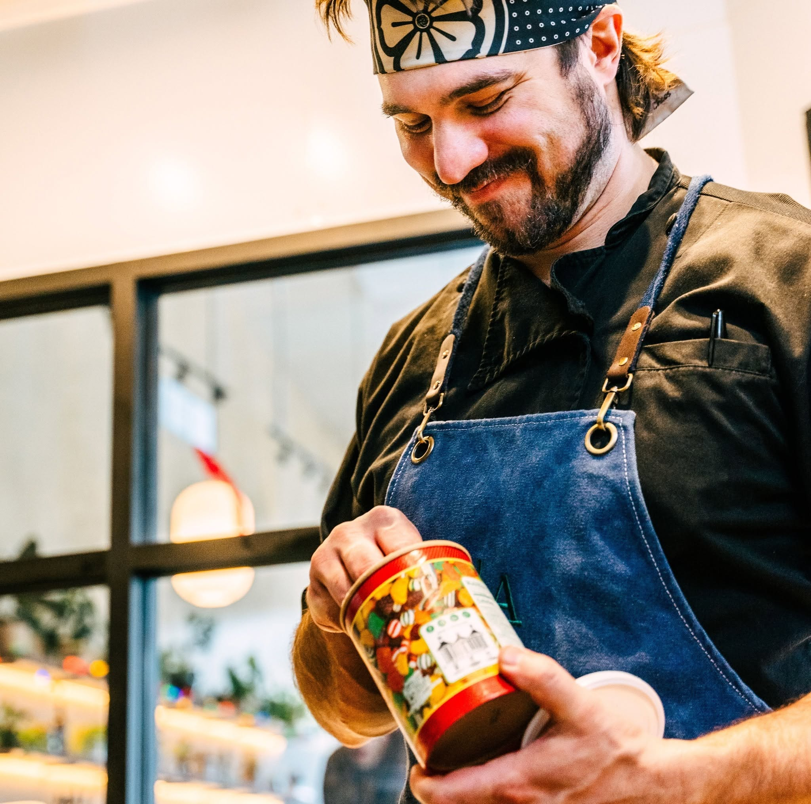

Kitchen Philosophy
Follow the flavor
If an idea tastes good, we'll explore it. If it doesn't, we'll move on and pretend it never happened.
Origin
What began as a small idea, grew into a small kitchen, and then a small restaurant. Acorn serves up a rotating menu of bold flavors and comfort food in Traverse City's Atomic Marketplace. It's a place for people who like to eat good food, have fun, and don't take themselves too seriously.

Zachary Anderson
Zach didn't set out to build a restaurant empire. He just wanted to make really good food and share it with people. After years in professional kitchens, he opened Acorn Kitchen inside Atomic Marketplace as a home for bold flavors, comfort food, and whatever ideas keep him up at night. His approach is simple: cook things that sound delicious and don't overthink it. So far, it's working.
Kitchen Philosophy
If an idea tastes good, we'll explore it. If it doesn't, we'll move on and pretend it never happened.
House Rule
We don't have a corporate handbook. We have conversations, curiosity, and a habit of making things because they sound delicious.
Kitchen Window
A vignette into the life of a smashburger. No narration. Just hot steel, good ingredients, and a kitchen doing what it does best.